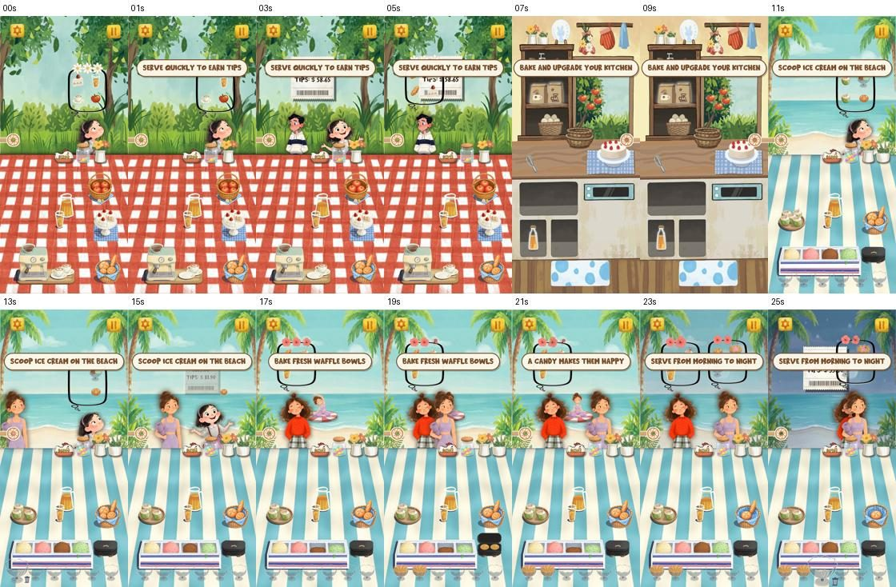
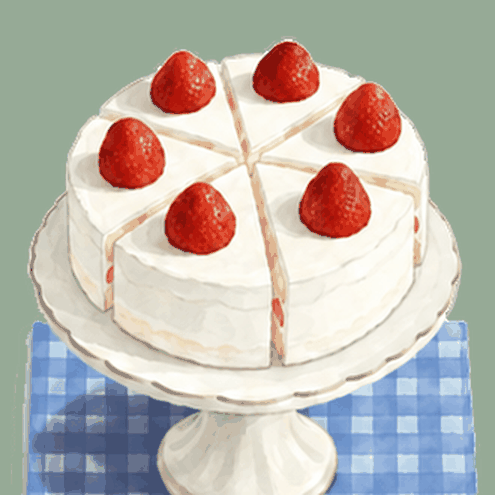
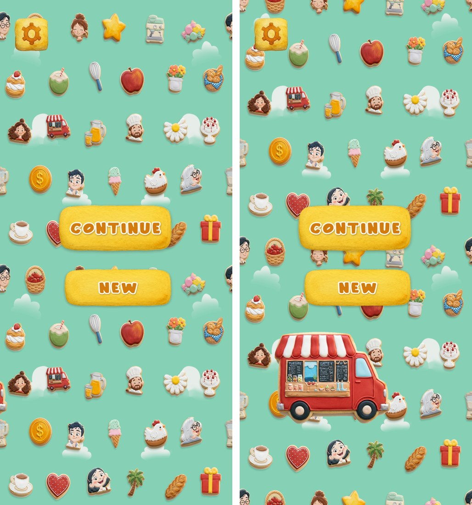
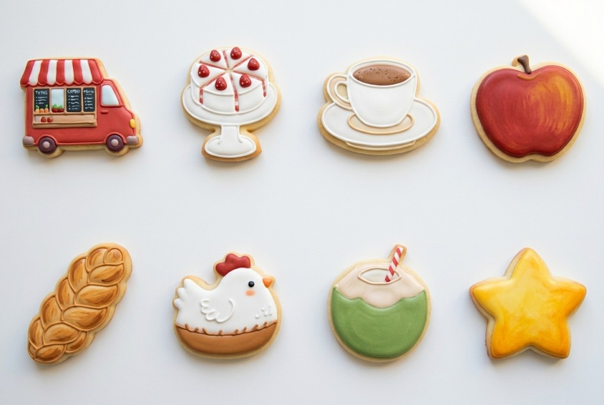
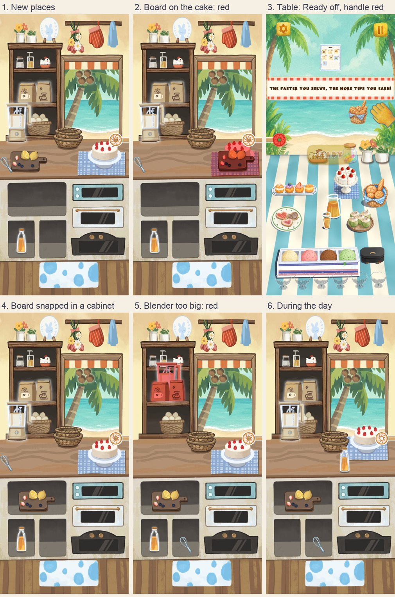

Food Truck Cafe
Your report for 17 November. 26.11.22 (build 35) and the 15 Stars purchase are in Apple's review, no message from Apple; they go on sale by themselves once approved.
1Next
You
Say "build" for a new test build: cake frames, blender back in place, the new table shadows, your coffee bag glow.
Cake (Current): your three fixes are in (layers, frame 2, the corner shade). Tick: good, or still ask ChatGPT tomorrow.
Start menu cookies (Current): in the game, with a capture. Tick: ship, fewer, bigger, or other items.
China (Q&A): the answer and four choices.
Kitchen (Current): tick how the arrangement feels.
App Store page (Q&A): one list of ten now; tick what to do.
iCloud ("FoodTruckCafe art"), the blender: 5 stills as the game shows it (blender_frame_1_rest, 2_vanilla, 3_strawberry, 4_chocolate, 5_mint), the 4 layers the game uses (blender, blender_blade, blender_fill, blender_swirl), and blender_redraw_body with blender_redraw_glow for your redraw.
Me
Version numbers (your tick): from the next version on, the version is the day we submit and builds start at 1.
26.11.22 is in Apple's review since 15 November; I looked in App Store Connect, Apple has sent no message. Nothing to do but wait.
ChatGPT, after 18 November 20:21: the cake retouch, only if you tick it.
2Q&A
Can we release a version just for China that does not break its rules? (17 November)
Short answer: Apple allows one build per app for all countries, so not a separate build. But most of this needs no new build at all.
- The two "Missing Info" banners are only questions. Security Assessment asks whether the app has encrypted messaging or hands out AI-made content. AI Generated Content asks whether the app offers AI services (chatbots, picture or voice generation). Our game does neither, so both answers are No. I opened both forms and saved nothing; they are your declarations.
- The real rule is about purchases. Apple: a paid game, or a game with in-app purchases, needs a Chinese government approval number, which takes a Chinese business licence. Since Remove Ads and 15 Stars, Apple marks our China listing "missing game registration number".
- The way round, same build: each purchase has its own list of countries. Switch both purchases off for China mainland, and the game there is free with ads only. I would also hide the two buy buttons where the store offers nothing. I cannot promise Apple then clears its mark; Chinese law strictly wants approval for every game, Apple enforces it for paid ones.
- ICP filing number: Apple asks it of "some apps" and only offers a field for it. It also needs a Chinese entity. Nothing to do unless Apple asks.
China today: the game is on the store there, both purchases too. Deadline on the banners: 31 January 2027.
App Store page: what we can improve, without marketing (15 and 16 November)
Today: name "Food Truck Cafe", subtitle "Bake, serve & grow your cafe", English only, 0 written reviews, 6 of 10 screenshots, one video. Apple ranks search by name, subtitle, keywords and category, and by downloads and ratings. The description does not count for search.
A. To be found more
- Ask happy players for a rating. Apple's own popup after a 3-star day, at most 3 times a year. A small code change; the biggest win.
- New subtitle and keywords. Ours miss ice cream, waffles, the beach, coffee. For example: subtitle "Cozy bakery & cooking tycoon"; keywords restaurant,kitchen,chef,coffee,barista,ice cream,dessert,cake,pastry,diner,cute,sweet,waffle,beach. Store text, so only with your words.
- UK and Australia English pages. More keyword fields. Common practice; Apple does not say how much it helps.
B. To look better once found
- A universal picture (new with iOS 27). One wide picture for the top of the page and for search results, and what Apple needs to feature a game in its big spots. We have none. Goes up without a new version, through Apple's review.
- Video. It ends on the night beach and jumps back to the forest; it opens on a customer waiting; the cover is the forest serve. Fix: open on a serve, loop smoothly, ice cream on the cover.
- Screenshots. Captions sit in three different places; the kitchen has empty ovens; the shop shows dark locked shapes; 4 slots are unused.
- Description and promotional text. Still says "serve two customers at a time"; no beach, ice cream, chapters or star shop. The promotional text can change at any time without review.
- iPhone Duo screenshots. They give a "made for iPhone Duo" badge and become required in April 2027. Our video already fills the Duo slot.

C. News slots
- An in-app event for the winter chapter in mid-December. Free; shows on the page, in search and on the Today tab. Needs a 16:9 and a 9:16 picture.
- A custom page for ice cream, tied to the keyword, with the beach pictures first.
Checked: our pictures follow Apple's rules (no prices, links or awards; fit for 4+). Later: Apple's A/B test of icon and pictures, once there are more visitors.
Sources: Apple's pages on search, the product page, asset best practices, custom pages.
3Current
Cake: your three fixes, 17 November, 20:50. In the project, in no build.

- 1, the layers: the cut faces are ChatGPT's original ones again (from the old frames), a little crisper.
- 2, frame 2: the pale patch with a hard edge on the plate is gone. All frames now share one plate picture, matched to the plate's own colour.
- 3, one slice: the shade at the slice's corner is gone. Each cut face has one small shade under it, and it leaves with its slice.
- ChatGPT is out of pictures until 18 November, 20:21. Your three fixes are worded and waiting in its chat; I did them here meanwhile.


Start menu: cookies instead of the ice creams, 17 November. In the project, in no build.

- Gemini's look, as you picked. Seven customers, and eight things from the game that I picked: the truck, the strawberry cake, the coffee cup, the apple, the braided bread, the hen, the coconut, the star.
- Same mint ground and clouds, same slow scroll. Fifteen cookies per picture; the ice creams were six.

Choux: the new plate and ChatGPT's four choux are in the game, test build 36, 16 November.

- The choux leave from the right: lemon first, the original last.
- The order bubble, the menu sticker and the shop card still show the old choux.
Kitchen arrangement: built, in test build 36, 16 November.

How it works:
- When: in the morning, while the table is being arranged. Pull the handle to the kitchen; the seven pieces wiggle and can be dragged. During the day they stay put and work as always.
- Table: a piece stays where you drop it, if its foot is on the counter. Two boxes touching: both turn red.
- Cabinets: a piece dropped inside jumps to its place on the floor. Too big, or two pieces on one place: red.
- Anywhere else (wall, window, ovens): the piece is red in your hand and goes back where it was when you let go.
- Red kitchen, no day: back at the table, Ready is greyed and the kitchen handle pulses red. Fix the red piece and Ready comes back.
- In the kitchen the Ready button, the hint banner and the small menu are hidden, so nothing lies on the counter.
- Your arrangement is saved when the day starts. A new purchase that lands on a moved piece resets the kitchen to the game's own places.
Places, changed after build 36 (your word): blender, board, baskets and cake are back where they always were; the whisk stays at the left edge. Not in a build yet.

- The board stands a little further right and lower than before, and the baskets a little further right (about 30 pixels each). At the exact old spots their boxes touched the blender's and each other's, so the kitchen would start red.
- An arrangement you saved in build 36 is dropped once, so you see these places.
I used all four cabinets. The whisk is its own piece now, on the smoothed counter.
Kitchen: a glow brush copied from the coffee bags and the tree's apples, 15 November. The blender's glow repainted with it; in the game, in no build.

- What the bags' and apples' glow is: brightest right at the object's edge and the same width all round it, like a soft white brush run along the outline. Cool white, the same in both.
- Mine was the opposite: nearly nothing at the edge, brightest a few pixels out, then a long fade. That reads as a blur.
- Its width follows the object's size: the bags' band is 30 pixels, an apple's 14. The brush works it out for each object.
- The brush (Docs/tools/glow_brush.py) paints this glow around any picture, as its own layer or baked into the picture. Re-painting the bags and apples with it gives back their own glow.
The kitchen with everything bought, 15 November. Every food, all three ovens, the coffee machine and ice cream at their top level.

- The pull handle sits on the cake at its starting height; it can be dragged up or down.
4MVP
For the release after 26.11.22. Nothing here is in a build.
The three things for the next release (your pick):
- Redraw the choux. Done: the new plate with ChatGPT's four flavours is in test build 36, and you kept them over the repaint.
- Redesign the kitchen. Seven pieces are arrangeable in test build 36 (free on the table, snapped in the cabinets, red blocks the day). After it: the pieces back at their old places, whisk at the left edge.
- Improve the App Store page. Your ticks on the Q&A list choose which parts.
5Backlog
Nothing open.
6Analysis
Nothing open.